pacman::p_load(tidyverse)Hands-on Excercise 1
Getting Started
Install and launching R packages
The code chunk below uses pacman package’s p_load() to check if tidyverse packages are installed in the computer. If they are, then they will be launched into R.
Importing the data
exam_data <- read.csv("Exam_data.csv")In RStudio, can view the dataset in the environment pane of the top right side after running the first two codes. There should be the data and clicking on it will reveal the data.
But it is possible to code it out as shown in the code chunk below. This will output all the rows and columns.
print(exam_data)To just show the the top few records of the data, use this code:
head(exam_data) ID CLASS GENDER RACE ENGLISH MATHS SCIENCE
1 Student321 3I Male Malay 21 9 15
2 Student305 3I Female Malay 24 22 16
3 Student289 3H Male Chinese 26 16 16
4 Student227 3F Male Chinese 27 77 31
5 Student318 3I Male Malay 27 11 25
6 Student306 3I Female Malay 31 16 16Or if just want to see a statistical overview of the data, use this code instead:
summary(exam_data) ID CLASS GENDER RACE
Length:322 Length:322 Length:322 Length:322
Class :character Class :character Class :character Class :character
Mode :character Mode :character Mode :character Mode :character
ENGLISH MATHS SCIENCE
Min. :21.00 Min. : 9.00 Min. :15.00
1st Qu.:59.00 1st Qu.:58.00 1st Qu.:49.25
Median :70.00 Median :74.00 Median :65.00
Mean :67.18 Mean :69.33 Mean :61.16
3rd Qu.:78.00 3rd Qu.:85.00 3rd Qu.:74.75
Max. :96.00 Max. :99.00 Max. :96.00 Introducing ggplot
R Graphics VS ggplot
hist(exam_data$MATHS)
ggplot(data=exam_data, aes(x = MATHS)) +
geom_histogram(bins = 10,
boundary = 100,
color = 'black',
fill = 'grey') +
ggtitle("Distribution of Maths scores")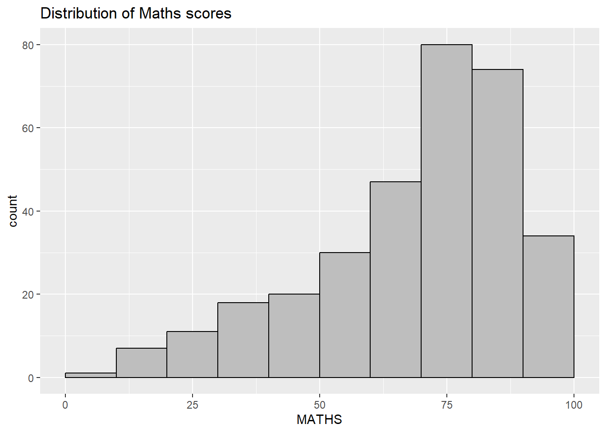
Grammar of Graphics
ggplot2 has a layered grammar of graphics, so it will each grammar of graphic is a layer. It consist of 7 grammars:
- Data: dataset being plotted
- Aesthetics: attributes of data and use them to influence visual characteristics such as position, colors, size, shape or transparency
- Geometries: visual elements used such as point, bar or line
- Facets: split data into subsets to create multiple variations of the same graph
- Statistics: statistical transformation that summarize data (eg. mean, confidence intervals)
- Coordinates: define plane on which data are mapped on the graphic
- Theme: modify all non data component of plot (eg. main title, sub title, y-axis title or legend backgroun)
Essential Grammatical Elements in ggplot2: Data
Call ggplot() function to initialize a ggplot object. Use data argument to define dataset to be used for plotting.
ggplot(data=exam_data)
Essential Grammatical Elements in ggplot2: Aesthetic mapping
Each visual characteristic can thus encode an aspect of the data and be used to convey information. Specified using aes() function.
ggplot(data=exam_data,
aes(x= MATHS))
Essential Grammatical Elements in ggplot2: Geometrics (geom)
Bar chart: geom_bar()
ggplot(data = exam_data,
aes(x= RACE)) +
geom_bar()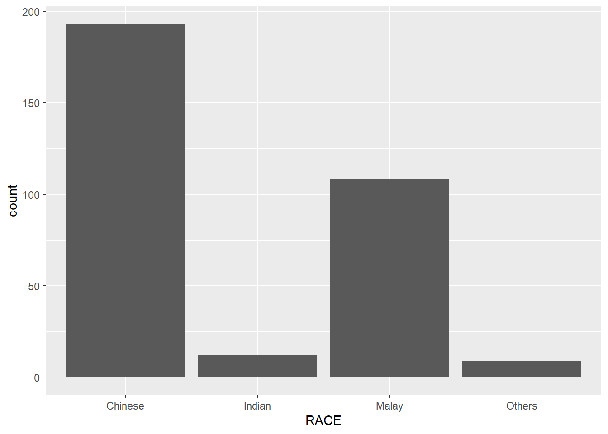
Dot plot: geom_dotplot()
Width of dot corresponds to the bin width (or max width, depending on binning algorithm), and dots are stacked, with each dot representing one observation.
ggplot(data = exam_data,
aes(x= MATHS)) +
geom_dotplot(dotsize = 0.5)
WarningBe careful
The y scale is not very useful and in fact is misleading. As such it is better to turn off y-axis using scale_y_continous().
ggplot(data=exam_data, aes(x = MATHS)) +
geom_dotplot(binwidth=2, dotsize = 0.5) +
scale_y_continuous(NULL, breaks = NULL)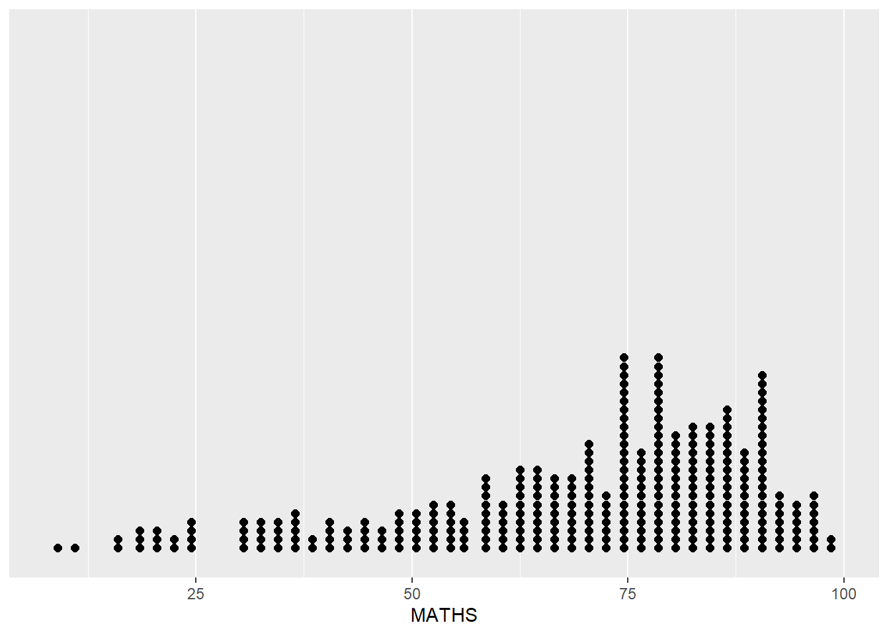
Note
The difference in the first and the second code is the additional binwidth argument. The binwidth controls the binning. The dotsize is scaling the drawing of the dots. So just having binwidth argument means binning is controlled and ggplot automatically default the dot size to 1, as shown below. Having only the dotsize argument means ggplot bins according to its default but size of the dot is controlled as shown in the first code. And having both arguments means that ggplot have to follow the binning and size of the dot specified as shown in the second code.
ggplot(data = exam_data,
aes(x= MATHS)) +
geom_dotplot(binwidth = 2.5)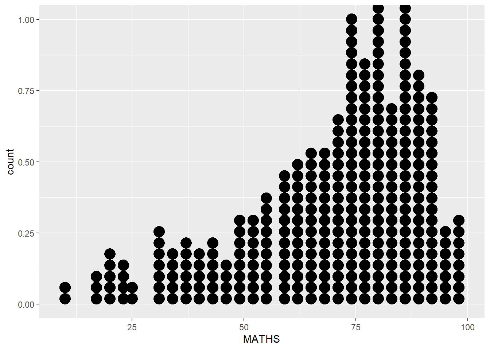
Histograms: geom_histograms()
The code chunk below is an example to create a simple histogram by using values in MATHS field of exam_data
ggplot(data=exam_data, aes(x = MATHS)) +
geom_histogram()
Density: geom_density()
geom_density() computes and plots kernel density estimate, which is smoothed version of the histogram. Useful alternative to the histogram for continuous data that comes from an underlying smooth distribution.
ggplot(data=exam_data, aes(x = MATHS)) +
geom_density()
Boxplot: geom_boxplot()
geom_boxplot() displays continous value list. It visualises five summary statistics (the median, two hinges and two whiskers), and all “outlying” points individually.
ggplot(data=exam_data,
aes(y = MATHS, x = GENDER)) +
geom_boxplot()
Notches are used in box plots to help visually assess whether medians of distributions differ. If the notches do not overlap, this is evidence that the medians are different.
ggplot(data=exam_data,
aes(y = MATHS, x = GENDER)) +
geom_boxplot(notch = TRUE)From this, it can be seen that the median is not the same.
Violin plot: geom_violin()
geom_violin() creates violin plot which is a way to compare multiple data distributions. With ordinary density curves, it is difficult to compare more than just a few distributions because the lines visually interfere with each other. With a violin plot, it’s easier to compare several distributions since they’re placed side by side.
ggplot(data=exam_data,
aes(y = MATHS, x = GENDER)) +
geom_violin()
Scatterplot: geom_point()
ggplot(data=exam_data,
aes(x = MATHS, y = ENGLISH)) +
geom_point()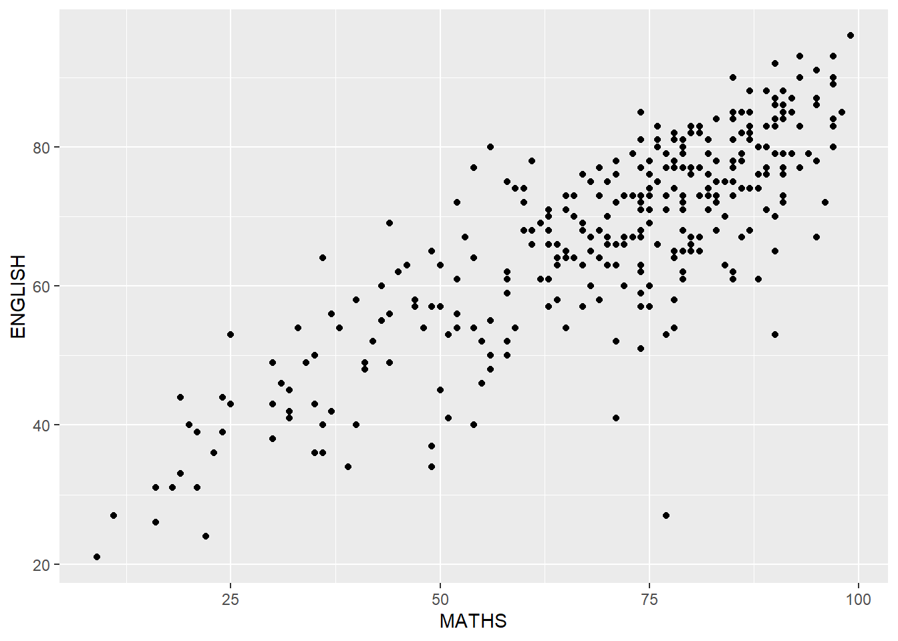
Modifying geometric object by changing geom()
Lets use histogram as an example. Bins argument is the number of bins. Fill argument is the shade of the histogram. Color is the outline color of the bars. So, the code below means that the number of bins is 20, with light blue shade outlined with black.
ggplot(data=exam_data, aes(x= MATHS)) +
geom_histogram(bins=20, color='black', fill='light blue')
Modifying geometric object by changing aes()
We could add a subgroup by using colour, fill, shape argument in aes().
ggplot(data=exam_data,
aes(x = MATHS,
colour = GENDER)) +
geom_density()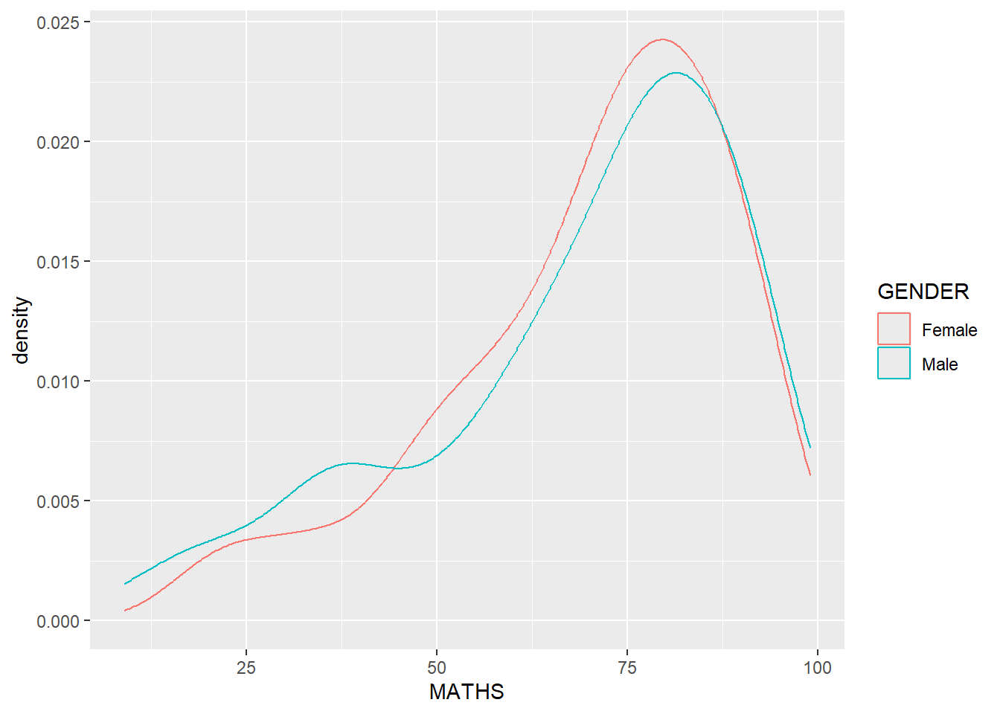
ggplot(data=exam_data,
aes(x = MATHS,
fill = GENDER)) +
geom_histogram(bins=20, color='black')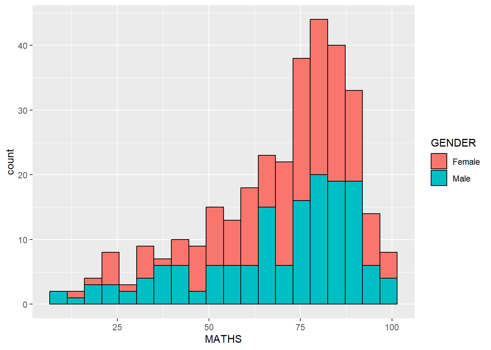
ggplot(data=exam_data,
aes(x = MATHS,
y = ENGLISH,
shape = GENDER)) +
geom_point()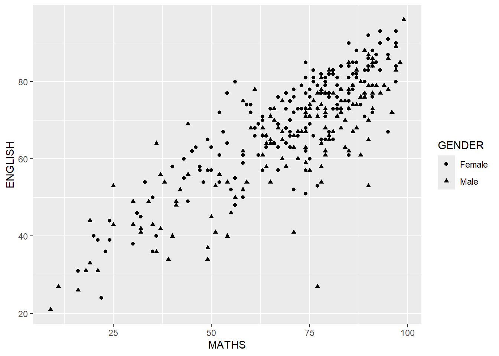
Note
Scatterplot can use shape and colour. Bar and histogram can use fill. Density can use colour. Dot plot can use shape, colour and fill. Alpha can also be used in aes() which controls the opacity.
geom objects can be combined
The code chunk below combine scatterplot and boxplot.
ggplot (data=exam_data,
aes(y = MATHS,
x = GENDER)) +
geom_boxplot() +
geom_point(position='jitter', size = 0.5)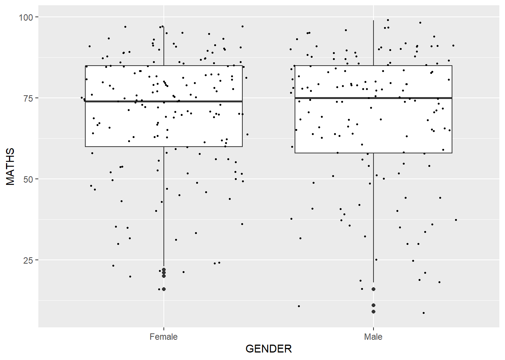
Note
Jitter is used for the position so that a random noise is given to very point, which can prevent overplotting where dots might overlap.
Essential Grammatical Elements in ggplot2: stat
Statistical functions statistically transform data, usually as some form of summary. For example:
frequency of values of a variable (bar graph)
- a mean
- a confidence limit
There are two ways to use these functions:
stat_()function to override default geomgeom_()function to override default stat
stat_summary() method
Below is a simple boxplot that is incomplete because the positions of the means are not shown.
ggplot(data=exam_data,
aes(y = MATHS, x = GENDER))+
geom_boxplot()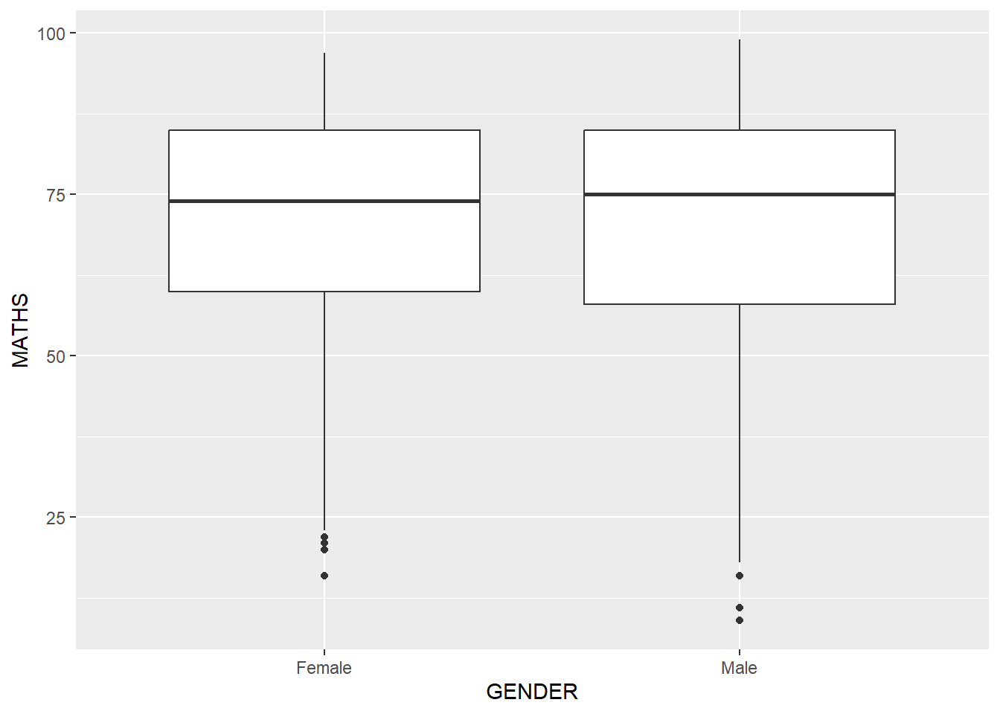
Now add stat_summary() function and override default geom.
ggplot(data=exam_data,
aes(y = MATHS, x = GENDER))+
geom_boxplot() +
stat_summary(geom = 'point',
fun = 'mean',
colour = 'red',
size = 4)
geom() method
ggplot(data=exam_data,
aes(y = MATHS, x = GENDER))+
geom_boxplot() +
geom_point(stat = 'summary',
fun = 'mean',
colour = 'red',
size = 4)
Adding best fit curve on scatterplot
Below is a scatterplot between Maths and English grades of students.
ggplot(data=exam_data,
aes(x = MATHS, y = ENGLISH)) +
geom_point()
The interpretability of this graph can be improved by adding a best fit curve. This is done using geom_smooth().
ggplot(data=exam_data,
aes(x = MATHS, y = ENGLISH)) +
geom_point() +
geom_smooth(size = 0.5)
The default smoothing method used is loess. But this can be overridden as shown below.
ggplot(data=exam_data,
aes(x = MATHS, y = ENGLISH)) +
geom_point() +
geom_smooth(method = lm,
linewidth = 0.5)
Essential Grammatical Elements in ggplot2: Facets
Facetting generates small multiples or trellis plot, each displaying a different subset of the data. They are an alternative to aesthetics for displaying additional discrete variables. ggplot2 supports two types of facets, namely: facet_grid() and facet_wrap().
facet_wrap() function
facet_wrap() wraps a 1d sequence of panels into 2d. This is generally a better use of screen spae than facet_grid() because most displays are roughly rectangular.
The code chunk below plots a trellis plot using facet_wrap().
ggplot(data=exam_data,
aes(x = MATHS)) +
geom_histogram(bins = 20) +
facet_wrap(~ CLASS)
It is also possible to do a combination as shown in the code chunk below.
ggplot(data=exam_data,
aes(x = MATHS)) +
geom_histogram(bins = 20) +
facet_wrap(~ CLASS + GENDER)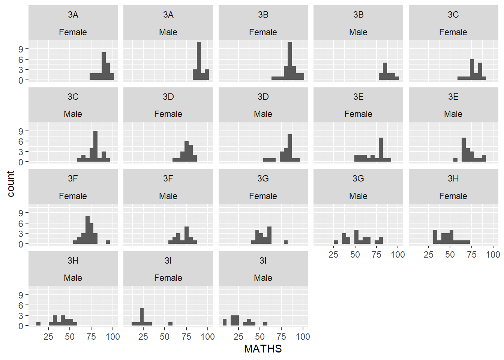
facet_grid() function
facet_grid() forms a matrix of panels defined by row and column facetting variables. It is most useful when you have two discrete variables, and all combinations of the variables exits in the data.
The code chink below plots a trellis plot using facet_grid().
ggplot(data=exam_data,
aes(x = MATHS)) +
geom_histogram(bins = 20) +
facet_grid(~ GENDER)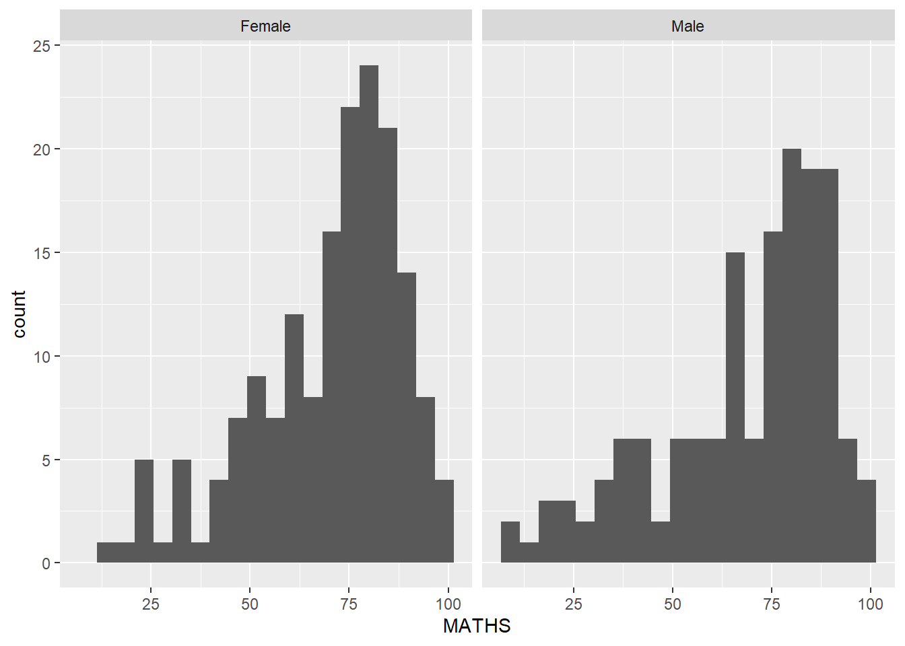
The graph plot the trellis plot through column. It is possible to change the orientation to rows instead.
ggplot(data=exam_data,
aes(x = MATHS)) +
geom_histogram(bins = 20) +
facet_grid(rows = vars(GENDER))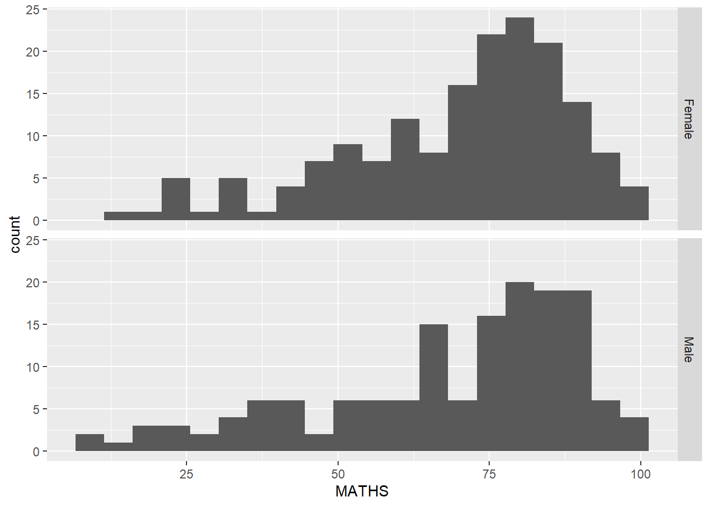
Again it is possible to do a combination as shown in the code chunk below.
ggplot(data=exam_data,
aes(x = MATHS)) +
geom_histogram(bins = 20) +
facet_grid(vars(CLASS), vars(GENDER))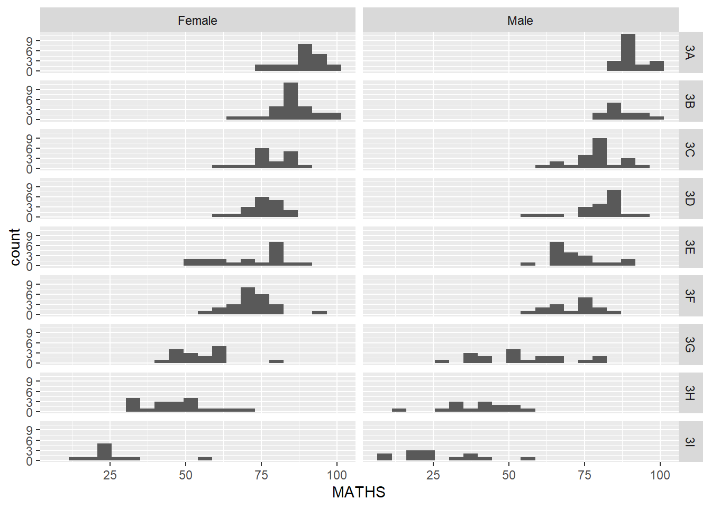
Essential Grammatical Elements in ggplot2: Coordinates
Coordinates function map the position of objects onto the plane of the plot. There are a number of different possible coordinate systems to use, they are:
- coord_cartesian(): the default cartesian coordinate systems, where you specify x and y values (e.g. allows you to zoom in or out)
- coord_flip(): a cartesian system with the x and y flipped
- coord_fixed(): a cartesian system with a “fixed” aspect ratio (e.g. 1.78 for a “widescreen” plot)
- coord_quixkmap(): a coordinate system that approximates a good aspect ratio for maps
coord_flip() function
By default, bar chart of ggplot2 is in vertical form.
ggplot(data=exam_data,
aes(x = RACE)) +
geom_bar()
The code chunk below flips the horizontal bar chart into vertical bar chart by using coord_flip().
ggplot(data=exam_data,
aes(x = RACE)) +
geom_bar() +
coord_flip()
coord_cartesian() function
The scatterplot below is slightly misleading because the y-axis and the x-axis range are not equal.
ggplot(data=exam_data,
aes(x = MATHS, y = ENGLISH)) +
geom_point() +
geom_smooth(method = lm,
linewidth = 0.5)
Lets fix both the y-axis and x-axis range from 0-100. The code chunk below does that.
ggplot(data=exam_data,
aes(x = MATHS, y = ENGLISH)) +
geom_point() +
geom_smooth(method = lm,
linewidth = 0.5) +
coord_cartesian(xlim = c(0,100),
ylim = c(0,100))
Essential Grammatical Elemetns in ggplot2: themes
Themes control elements of the graph not related to the data. For example:
- backgroun colour
- size of fonts
- gridlines
- colour of labels
Built-in themes include:
theme_gray()(default)theme_bw()theme_classic()
A list of theme can be found at this link. Each theme element can be conceived of as either a line (e.g. x-axis), a rectangle (e.g. graph backgroun), or text (e.g. axis title).
Example are shown below using the horizontal bar chart.
ggplot(data=exam_data,
aes(x = RACE)) +
geom_bar() +
coord_flip() +
theme_gray()
ggplot(data=exam_data,
aes(x = RACE)) +
geom_bar() +
coord_flip() +
theme_classic()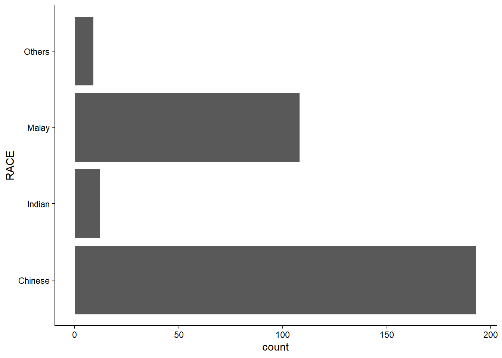
ggplot(data=exam_data,
aes(x = RACE)) +
geom_bar() +
coord_flip() +
theme_minimal()